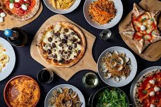

Explore the world of Culinary with us

Courses we offer
This course takes you through popular Indian regional cuisines from different states and focuses on Regional main courses, lost cuisines and dishes and the less well-known ones, keeping in mind most of the classics. The course will teach you to make Masalas, Marinades, Butchery skills, Indian bread making, handling the Tandoor and making Breakfast dishes. We’ll also help you understand the important role played by Chutneys, Podis, Pickles and Spice mixes in Indian cuisines. Finally, a lesson devoted to pizza and breads will explain the art and science of working with yeast and teach you to prepare the best ever Neapolitan-style thin-crust pizza.
The course begins with an overview of the Italian meal structure, important regional traditions, and key pantry staples. In a lesson devoted to salads and vegetables, you will learn to create a salad in the Italian fashion, without first making a dressing. Two lessons cover the world of fresh and dried pasta, as well as all of the classic sauces.Finally, a lesson devoted to pizza and breads will explain the art and science of working with yeast and teach you to prepare the best ever Neapolitan-style thin-crust pizza.

The course begins with the fundamentals of baking and pastries. Theory and hands-on work will support the students’ understanding of this art and science. This course is intended to give the student a detailed understanding of the components of various bread, cookie and pastry preparation techniques including quick breads, yeast breads, enriched and laminated doughs, cookie mixing methods, pies, tarts, syrups, icings, sauces, custards, creams, and cakes.